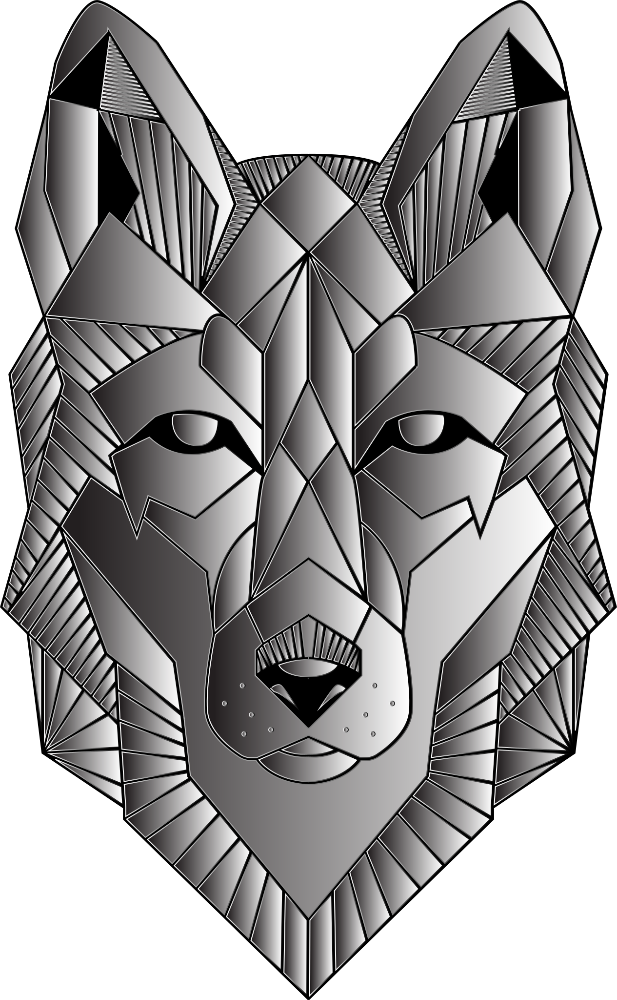
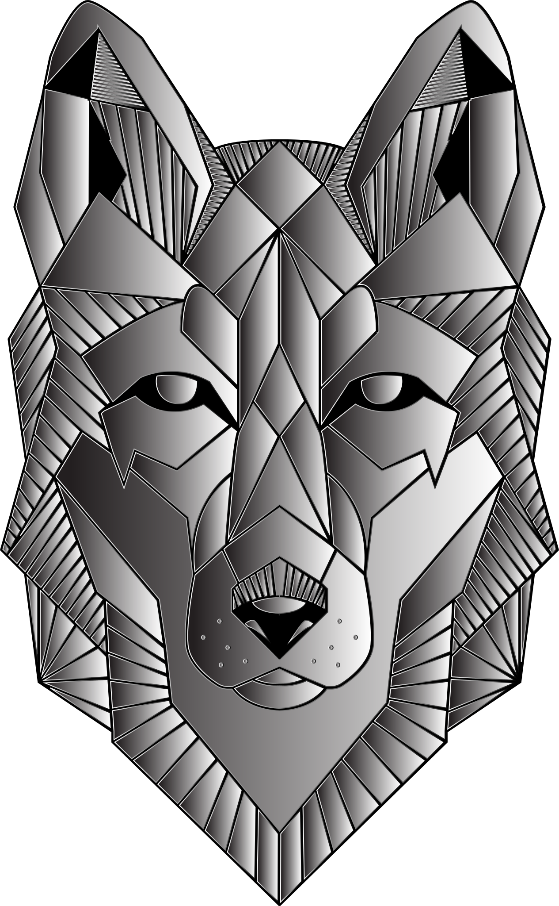

Una etiqueta de bloque es aquella que genera saltos de línea. Ocupa todo el ancho disponible.
La etiqueta de bloque (Block) por excelencia, es la etiqueta <div>. Es un contenedor de bloque genérico.
Una etiqueta de línea únicamente ocupa el espacio necesario. Solamente ocupa el ancho necesario.
La etiqueta de línea (InLine) por excelencia, es la etiqueta <span>. Es un contenedor de línea genérico.
Segunda etiqueta "span", como es una etiqueta InLine(de línea), este texto quedará justo después del texto anterior, sin dejar salto de línea.
Estilos CSS en HTML
Estilos CSS incrustados dentro de HTML con el atributo "style".

 
